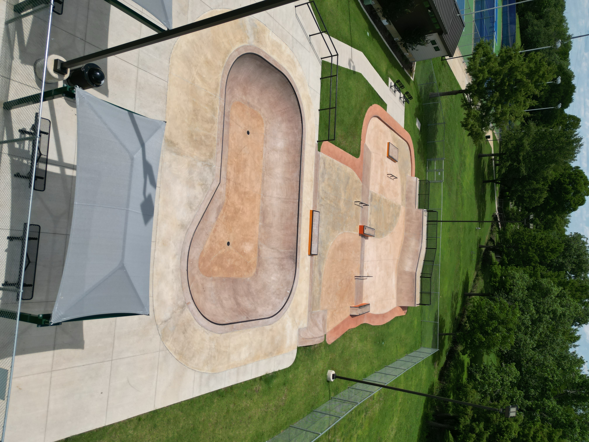
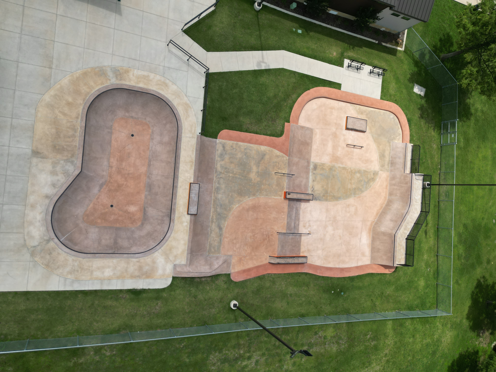

Mesquite Skatepark at Westlake Sports Center
Location: 601 Gross Rd, Mesquite, TX 75149
The Dirt Therapy Note
For me, this park isn't about status or chasing the latest pro-level obstacle. It's about the rhythm of the ride. When I’m carving through the bowl or hitting the lines here, it’s purely about the feeling—it’s that moment where the noise of the day fades and it’s just the wheels and the concrete. These sessions are how I clear my head and create memories for myself, not for an audience.
The Breakdown
- Park Vibe: Clean, well-maintained, and incredibly welcoming. It’s a great spot to get reps in without the high-pressure environment of larger, crowded city parks.
- Key Features:
- The Bowl: A solid 4-foot bowl that's perfect for finding a flow state.
- Street Section: Three main lanes featuring bank ramps, quarter pipes, grind boxes, and rails.
- Beginner-Friendly: A dedicated area that makes it accessible if you’re just starting or shaking off the rust.
- Amenities: Shaded seating for when you need to catch your breath, and clear, straightforward check-in procedures at the office.
The Ride Through
The Dirt Therapy Note
Flow of the park from an overhead perspective...
Dirt Therapy Tips
- Beat the Crowd: I’ve found that going on a weekday or early in the morning makes for the best sessions. You get the space to yourself to really focus on your lines.
- Prep for the Ride: It’s a city-run facility, so always check in at the office first. It keeps the community running smoothly and ensures the park stays open and available for us to use.
- Gear Up: Wear your helmet and pads. Staying safe is part of the therapy—you can’t keep riding if you’re sidelined by an injury.